ЭЛЕКТРИЧЕСКИЙ ТОК В МЕТАЛЛАХ
- Носителями тока в металлах являются электроны проводимости (свободные электроны), образовавшиеся из валентных электронов атомов металла, которые не принадлежат определенному атому, а являются коллективизированными (обобществленными) электрона.
Концентрация электронов проводимости~1028-1029м-3.В классической теории Друде-Лоренца эти электроны рассматриваются как электронный газ, обладающий свойствами одноатомного идеального газа.
- Электроны проводимости в отсутствие электрического поля внутри металла хаотически движутся и сталкиваются с ионами кристаллической решетки металла. Средняя скорость теплового движения электронов при Т=273К составляет~ 105 м/с.
- Электрический ток в металле возникает под действием внешнего электрического поля, которое вызывает упорядоченное движение электронов. При больших токах скорость упорядоченного движения составляет ~10-4м/с ,она называется скоростью дрейфа ϋдр.
- При нагревании металлов их сопротивление увеличивается, так как с повышением температуры атомы движутся быстрее, их расположение становится менее упорядоченным и сильнее мешают направленному движению свободных электронов. При очень низких температурах электрическое сопротивление некоторых металлов резко падает до нуля, наблюдается явление сверхпроводимости.
ЭЛЕКТРИЧЕСКИЙ ТОК В ПОЛУПРОВОДНИКАХ
Полупроводники- широкий класс веществ, характеризующийся значениями удельного сопротивления, промежуточными между удельным сопротивлением металлов
(~10-2-10-4Ом*м) и хороших диэлектриков (~108-1010 Ом *м); значения удельного сопротивления указаны при комнатной температуре.
Наиболее типичными группами полупроводников являются:
- Элементы IV группы периодической системы Д.И. Менделеева Ge и Si;
- Алмазоподобные полупроводники – соединения элементов III группы (Al, Ga, In) с элементами V группы (P, As, Sb) типа GaAs, InSb, GeP, InP и т.д;
- Элементы VI (Te и Se) и V (As, Sb, Bi) групп и их ближайшие аналоги (Pbs, PbSe, SeTe, GeTe и другие);
- Соединения элементов VI группы с Ti, V, Mn, Fe, Ni, Sn и другими.
Многие органические соединения также обладают свойствами полупроводников, например, нафталин.
- Характерной особенностью полупроводников, отличающей их от металлов, является 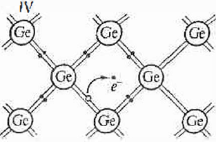уменьшение сопротивление с ростом температуры. С повышением температуры тепловое движение начинает разрывать связи электронов, и часть их становится свободными носителями заряда.
- Атом полупроводника, например, германия, имеет четыре электрона во внешней оболочке которые образуют ковалентную связь с электронами соседних атомов. При подведении энергии межатомные связи нарушаются, атомы теряют электроны и в решетке образуется вакантное место- дырка. При этом возможен
переход электрона от нейтрального атома к образовавшемуся иону, что равносильно движению положительного заряда в противоположном направлении. Таким образом, дырку можно рассматривать как квазичастицу, имеющую заряд +е. В чистом полупроводнике концентрации свободных электронов и дырок равны. Помимо этого, свободные электроны могут захватываться ионами (рекомбинация дырок). В стационарных условиях количество рекомбинирующих и образующихся свободных электронов одинаково. Наблюдается динамическое равновесие.
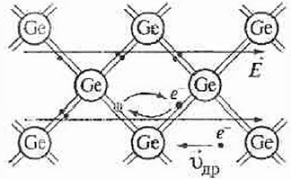
- В чистых полупроводниках концентрации свободных электронов и дырок равны.
Проводимость чистых полупроводников называется собственной.
При помещении полупроводника во внешнее электрическое поле свободные электроны смешаются против напряженности поля. В этом же направлении смещаются связанные электроны, что может быть представлено как перемещение дырок в направлении поля. Поэтому проводимость полупроводников называют также электронно-дырочной.
- Связь электронов может быть разорвана не только тепловым движением, но и различными внешними воздействиями: излучением, потоком быстрых частиц, сильным электрическим полем. Поэтому для полупроводников характерна высокая чувствительность электропроводности к внешним воздействиям, а также к содержанию примесей и дефектов в кристаллах, поскольку во многих случаях энергия электронов, локализованных вблизи атомов примесей или дефектов существенно меньше, чем в идеальном кристалле данного полупроводника.
- 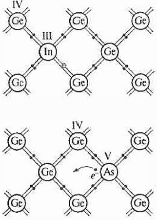При внесении примесей в полупроводнике изменяется соотношение количества дырок и свободных электронов, но полупроводник остается нейтральным.
При внесении акцепторных примесей концентраuюr дырок оказывается больше концентрации свободных электронов. В качестве акцепторных примесей используют атомы химических элементов, обладающие меньшей валентностью, чем атомы полупроводника. На пример, акцепторной примесью для кристаллов Ge или Si являются
атомы In, которые могут захватывать электроны из валентной зоны атома полупроводника, что приводит к образованию дырок.
Полупроводники с акцепторными примесями называются дырочными полупроводниками, или полупроводниками p-типа.
При внесении донорных примесей концентрация свободных электронов оказывается больше концентрации дырок. В качестве доноров используются атомы веществ, валентность которых больше, чем у атомов чистого полупроводника. Например, для Si и Ge типичны ми донорами являются атомы Р, As, ионизация которых приводит к появлению избыточных (нал собственными) свободных электронов.
При введении доноров в чистый полупроводник, например, атомов фосфора в германий, атом фосфора, обладающий пятью валентными электронами, замещает в кристаллической решетке четырехвалентный атом германия. При этом один валентный электрон атома фосфора не может вступить в химическую связь с атомами германия и оказывается «лишним» - свободным.
Полупроводники с донорными примесями называются полупроводниками n типа.
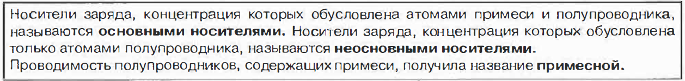
- Возможность в широких пределах управлять электропроводностью полупроводников изменением температуры, введением примесей и т.д. явилась основой их многочисленных и разнообразных применений (полупроводниковые приборы, фотоэлементы, термоэлементы, выпрямители, прием ник-и инфракрасного излучения и другие).
р – п - ПЕРЕХОД (ЭЛЕКТРОННО-ДЫРОЧНЫЙПЕРЕХОД)
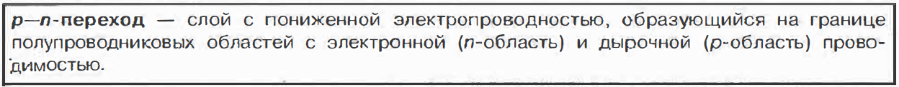
р- п-переход образуется в кристалле полупроводника, в котором введением соответствующих примесей создаются области с различной (р- и п-типа) проводимостью (гомопереход) или при контакте двух полупроводников с различными типами проводимости (гетеропереход). Через границу этих полупроводников происходит взаимная диффузия основных носителей: электроны из. п-полупроводника диффундируют в р-полупроводник, а дырки из р-полупроводника - в n-полупроводник. В результате участок п-полупроводника, граничащий с контактом, будет обеднен электронами и в нем образуется избыточный положительный заряд, обусловленный наличием оголенных ионов примеси. Движение же дырок из р-полупроводника в п-полупроводник приводит к возникновению избыточного отрицательного заряда в пограничном участке р-полу проводника. В результате образуется двойной электрический слой и возникает контактное электрическое поле, которое препятствует дальнейшей диффузии основных носителей заряда. Поэтому этот слой называют запирающим.
- 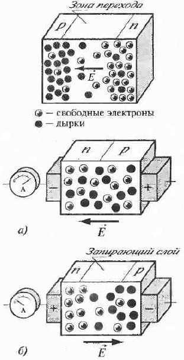Внешнее электрическое поле влияет на электропроводность запирающего слоя. Если полупроводники подключены к источнику так, как показано на рис. а, то под действием внешнего электрического поля основные носители заряда - свободные электроны в п-полупроводники и дырки в р-полупроводнике будут двигаться навстречу друг другу к границе раздела полупроводников, при этом толщина р-п-перехода уменьшается, следовательно, уменьшается его сопротивление. В этом случае сила тока ограничивается лишь внешним сопротивлением. Такое на правление внешнего электрического поля называется прямым (пропускным). Прямому включению р-п-перехода соответствует участок I на вольтамперной характеристике.
- Если полупроводники подключены к источнику так, как показано на рис. б, то электроны: в п-полупроводнике и дырки в р-полупроводнике будут перемещаться под действием внешнего электрического поля от границы раздела в противоположные стороны. Толщина запирающего слоя и, соответственно, его сопротивление увеличиваются. При таком направлении внешнего электрического поля - обратном (запирающем) - через граниuу раздела проходят только неосновные носители заряда, концентрация которых много меньше, чем основных, и ток практически равен нулю. Обратному включению р-п-перехода соответствует участок 2 на вольтамперной характеристике.
- Таким образом, р-п-переход обладает односторонней проводимостью. Это свойство используется в полупроводниковых диодах, содержащих один р-п-переход и применяемых, напри мер, для выпрямления переменного тока или детектирования. Полупроводниковые диоды обладают рядом преимуществ по сравнению с вакуумными диодами: они компактнее, экономичнее (не требуют для своей работы
источников высокого напряжения), обладают высокой надежностью. Однако они могут работать лишь в ограниченном интервале температур (от -70° до 12s·c).
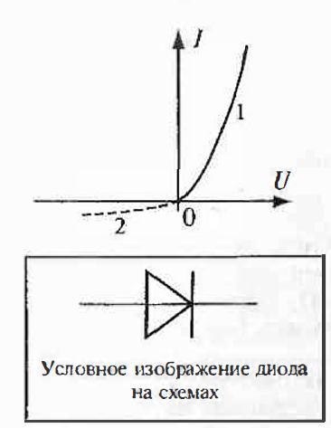
Биполярный транзистор - техническое устройство, представляющее собой систему полупроводников - полупроводник одного типа расположен между полупроводниками другого типа. Существует транзисторы р- п- р- и п- р- п-типов. Их строение схематически изображено на рисунке. Полупроводники, входящие н состав транзистора, называют коллектором, базой и эмиттером. Ниже на рисунке приведено условное обозначение транзисторов на схемах. Стрелка всегда обозначает эмиттер, а ее направление совпадает с направлением тока, условно принимаемым за положительно, в нормальном режиме работы.
- 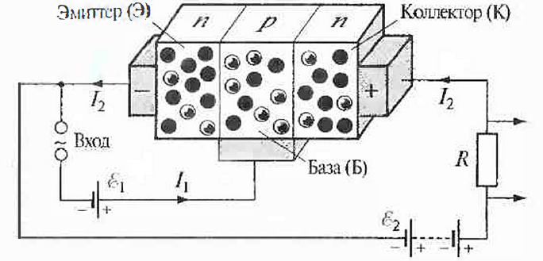
- 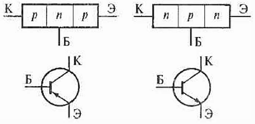
Рассмотрим, как работает транзистор, например, п- р- п-типа. Напряжение U2 между коллектором и эмиттером создается батареей с e2 Напряжение U1, создаваемое между эмиттером и базой, называют напряжением смещения базы. Если оно положительно, то переход эмиттер - база открыт для основных носителей эмиттера - электронов, которые под действием электрического поля переходят в базу, rде они являются неосновными носителями. Так как толщина базы мала (»1 мкм), то большинство электронов проходит в коллектор, напряжение на котором положительно. Переход база-коллектор закрыт для основных носителей базы - дырок, но открыт для неосновных носителей, которыми для базы являются электроны. Поэтому между коллектором и эмиттером протекает большой ток l1, а ток базы l1 оказывается слабым. Небольшие изменения напряжения на базе, обусловленные входным сигналом, вызывают значительные изменения силы тока l1 в цепи коллектора и большие изменения напряжения на резисторе R, что означает усиление напряжения. Аналогично работает транзистор p- n- p-n m a, где вместо электронов происходит перемещение дырок.
ЭЛЕКТРИЧЕСКИЙ ТОК В ВАКУУМЕ
Вакуум- состояние заключенного в сосуд газа при давлении меньше атмосферного. В зависимости от соотношения между длиной свободноrо пробеrа l частиц и линейным размером L сосуда (прибора) различают:
низкий вакуум - l.<< L, давление газа в сосуде выше 102 Па;
средний вакуум - l. = L, давление газа в сосуде лежит в пределах от 10-1Па до 102 Па;
высокий вакуум - l.>> L, давление газа в сосуде лежит в пределах от 10-5 Па до 10-1 Па;
сверхвысокий вакуум - l.>> L , давление газа в сосуде ниже 10-5 Па.
- При этом электроны, испускаемые телом, называют термоэлектронами, а само тело - эмиттером. К эмиттерам относятся металлы и полупроводники.
- Для вылета электрона с поверхности эмиттера необходимо, чтобы кинетическая энергия теплового движения электрона была достаточной для преодоления его связи с веществом, то есть для совершения работы выхода. При обычных (комнатных) температурах практически все электроны имеют кинетическую энергию меньшую, чем работа выхода, поэтому термоэлектронная эмиссия заметна только у тел, имеющих высокую температуру (например, при такой температуре металлы нагреваются до белого каления). Когда электрон покидает эмиттер, на поверхности последнего возникает избыточный положительный заряд. Электрон может удалиться от поверхности на малое расстояние (порядка размеров атома), может вернуться обратно в эмиттер. Над поверхностью нагретого тела образуется электронное облако, плотность которого быстро убывает при удалении от поверхности.
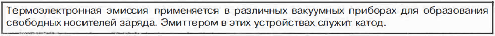
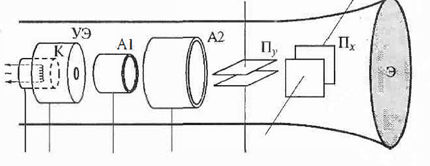Вакуумный диод - двухэлектродное электронная лампа (условное изображение приведено на рис. а). Диод представляет собой стеклянный баллон, из которого откачан воздух до давления 10-6-10-7 мм рт. ст. Внутри баллона размещены два электрода: катод К и анод А (внешний вил вакуумного диод показан на (рис. б). При нагревании катода с его поверхности испускаются электроны. При подключении анода к положительному полюсу источника тока, а катода - к отрицательным электронам под действием электрического поля движутся от катода к аноду и в <диоде возникает электрический ток. По мере увеличение напряжения сила тока в цепи растет, так как все большее количество вылетающих электронов достигает анода. При подаче достаточно большого напряжения сила тока в диоде достигает наибольшего значения Iнас (ток насыщения) и при дальнейшем росте напряжения не изменяется, так как при этом все электроны, испускаемые с поверхности катода в единицы времени, достигают анода. Пpи противоположном включении источника направление напряженности электрического поля меняется на противоположное, поэтому поле препятствует движению электронов к аноду - ток через анод не идет. Таким образом, вакуумный диод обладает односторонней проводимостью. При отрицательных
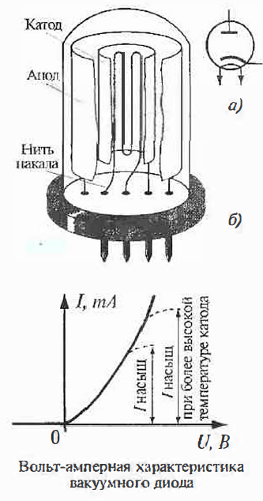
значениях напряжения сила тока в диоде равна нулю. Электронно-лучевая трубка. Схема устройства электронно-лучевой трубки приведена рисунке. электронно-лучевая трубка представляет собой стеклянный баллон, из которого откачан воздух, с находящимися внутри электродами. С одного конца он имеет расширение, на торцевую часть которого - экран Э- нанесен слой люминесцирующего под ударами электронов вещества. Электроны, испускаемые подогревным катодом К, проходят сквозь управляющий электрод УЭ и два ускоряющих анода AI и А2. Вся эта система, называемая электронной пушкой, служит для создания узкого (сфокусированного) направленного электронного пучка.
На управляющий электрод подается отрицательный относительно катода потенциал порядка нескольких десятков волы. Изменяя потенциал управляющего электрода, можно регулировать количество электронов, проходящих через него и, таким образом, управлять яркостью изображения на экране.
Нa аноды подаются положительный потенциалы порядка нескольких сотен волы на первый и нескольких тысяч вольт - на второй. Напряженность электрического поля между ними направлена от второго анода к первому, под действием этого поля электроны ускоряются, а также происходит фокусировка электронного пучка.
После электронной пушки электронный пучок проходит систему вертикально (Пу) и горизонтально (Пх) отклоняющих пластилин, на которые подается соответствующая разность потенциалов. Проходя между ними, электроны отклоняются в сторону положительной пластины. Изменяя напряжение между пластинами, можно перемещать электронный пучок, а, следовательно, и светящееся пятно на экране электронно-лучевой трубки. Малая масса электронов в электронном пучке обеспечивает малую инерционность электронно-лучевой трубки: электронный пучок практически мгновенно реагирует на изменение напряжения на отклоняющих пластинах. Кроме описанных выше электронно-лучевых трубок с электростатическим управлением, применяются также трубки с электромагнитным управлением, в которых отклонение электронного пучка осуществляется изменением значения и направления вектора магнитной индукции магнитного поля. Электронно-лучевые трубки применяются в осциллографах, телевизорах, дисплеях вычислительных машин, медицинской аппаратуре, радиолокаторах и т. д.
ЭЛЕКТРИЧЕСКИЙ ТОК В ЭЛЕКТРОЛИТАХ
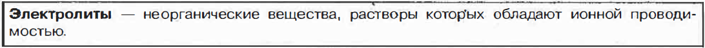
- Ток в растворах (или расплавах) электролитов представляет собой упорядоченное движение оно под действием внешнего электрического поля.
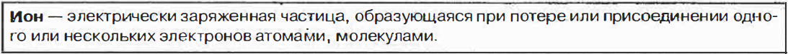
- Ионы бывают положительными (образуются при потере электронов), их называют катионами, и отрицательными (образуются при присоединении электронов), они называются анионами. Заряд ионов кратен элементарному заряду. Возникновение ионов в растворах электролитов происходит в процессе электролитической диссоциации
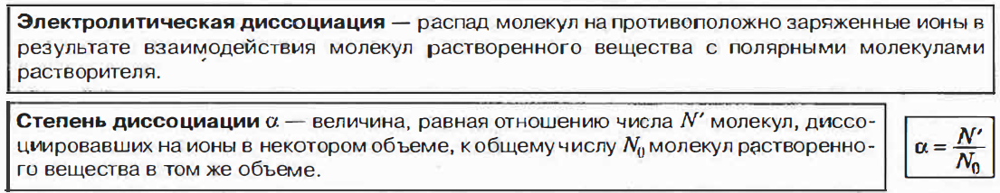
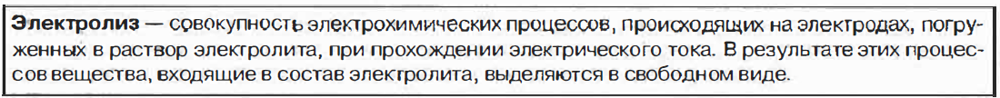
- Степень диссоциации зависит о, температуры, концентрации раствора и диэлектрической проницаемости растворителя. При прохождении электрического тока через растворы электролитов на электродах происходит электролиз.
- Ток в растворе электролита представляет собой направленное движение ионов к электродам. На аноде происходит реакция окисления - отрицательно заряженные ионы отдают лишние электроны, становятся нейтральными атомами и выделяются из раствора. На катоде, идет реакция восстановления - положительно заряженные ионы получают недостающие электроны.
- Электролиз лежит в основе электрохимического метода получения чистых веществ; используется для создания. защитных антикоррозийных покрытий на поверхности металлов - никелирования, хромирования и т. п. (гальваностегия), а также для изготовления металлических копий с рельефных поверхностей (гальванопластика).
ЗАКОНЫ ЭЛЕКТРОЛИЗ ФАРАДЕЯ.
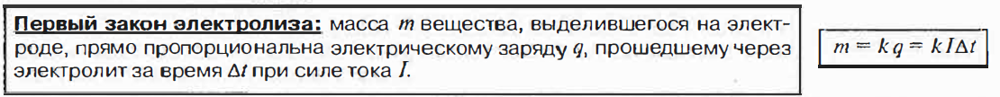
Коэффициент k называется электрохимическим эквивалентом вещества. Он численно равен массе данного вещества, выделяемой при электролизе единичным зарядом. Коэффициент k различен для разных веществ.
Единица электрохимического эквивалентом в СИ - кг/Кл.
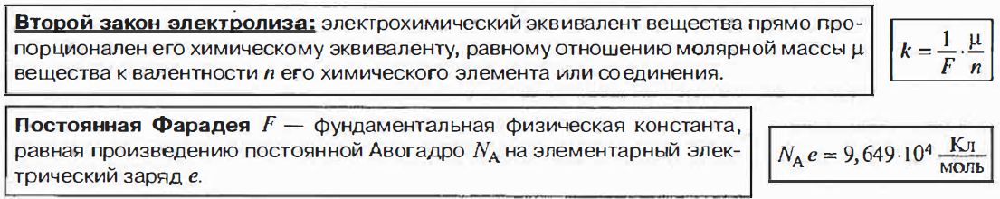
Постоянная Фарадея определяет количество электричества, прохождение которого через раствор электролита приводит к выделению I моля одновалентного вещества.
ЭЛЕКТРИЧЕСКИЙ ТОК В ГАЗАХ
Газы, состоящие из нейтральных атомов и молекул, являются изоляторами и не проводят электрического тока. Для возникновения электропроводности они должны быть ионизованы.
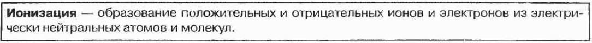
- Ударная ионизация - образование положительных ионов в результате столкновения быстрого электрона с атомом.
- Фотоионизация - выбивание электронов из атомов квантами электромагнитного излучения (коротковолнового ультрафиолетового излучения, рентгеновского излучения и у-излучения).
- Термическая ионизация - ионизация газа, нагретого до высокой температуры. Его атомы движутся с большими скоростями и, сталкиваясь, теряют электроны.
- Интенсивность ионизации измеряется числом пар частиц противоположного знака, образовавшихся за единицу времени в единице объема газа.
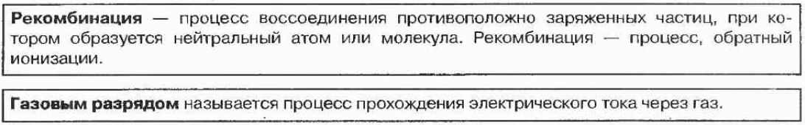
В зависимости от наличия внешнего ионизатора различают несамостоятельный и самостоятельные газовые разряды.
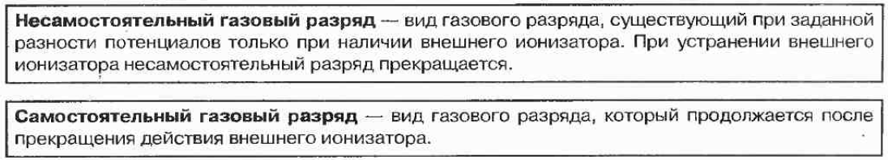
Ионы и электроны, необходимые для поддержания самостоятельноrо разряда, создаются самим разрядом в результате внутренних процессов, происходящих в газах (ударная ионизация и другие).
- Этот разряд возникает при достаточно высоком напряжении между электродами. Напряжение, при котором несамостоятельный разряд переходит в самостоятельный, называют напряжением пробоя газа Ипр, а сам процесс такого перехода - электрическим пробоем газа.
- В зависимости от давления газа и напряжения, приложенного к электродам, различают несколько видов самостоятельноrо разряда: тлеющий, дуговой, искровой, коронный.
ЗАВИСИМОСТЬ СИЛЫ ТОКА ОТ НАПРЯЖЕНИЯ ПРИ ГАЗОВОМ РАЗРЯДЕ
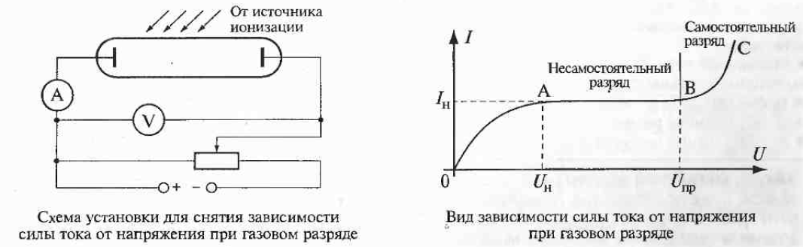
Участок 0-А. Ионы в газе возникают за счет действия внешнею ионизатора. Если приложить напряжение к электродам, ионы начнут двигаться, то есть возникнет ток. Он возрастает при возрастании напряжения, пока не достигает некоторого постоянного значения Iн, называемоrо током насыщения.
Участок А-В. В этой области, начиная с некоторого начиная напряжения U1 (напряжение насыщения), сила тока остается постоянной при увеличении напряжения. Это связано с тем, что при неизменной интенсивности ионизации в сильных электрических полях все ионы, образовавшиеся в газе, достигают электродов. Насыщение наступает вследствие того, что все образовавшиеся частицы, двигаясь в сильном электрическом поле, достигают электродов быстрее, чем заметная их часть успевает рекомбинировать с частицами противоположного по знаку заряда.
Участок В- С. Это область самостоятельного газового разряда. Основным источником заряженных частиц здесь шляется ударная ионизация газа. При некотором достаточном напряжении между электродами электроны в объеме газа настолько сильно разгоняются электрическим полем, по их энергии оказывается достаточной для ионизирует молекул газа. Вторичные электроны, ускоряясь в электрическом поле, также ионизируют молекулы газа. Помимо этого, положительные ионы, разгоняясь в электрическом поле, выбивают электроны с катода (эмиссия электронов) и вызывают его нагревание, что приводит к дополнительному испусканию электронов в процессе термоэлектронной эмиссии. Для поддержания разряда действие внешнего ионизатора не обязательно.
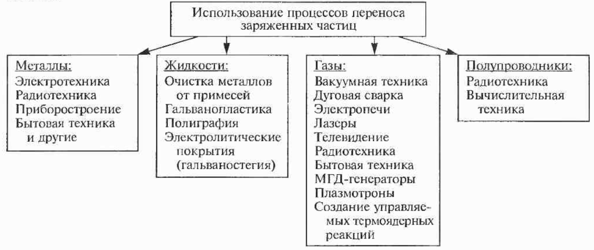